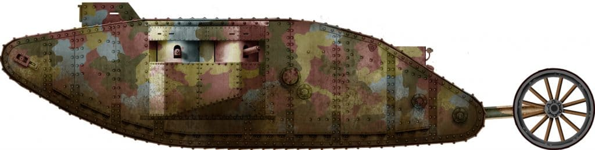

MARK I
Informacije o vozilu:
| Specifikacija | Detalji |
|---|---|
| Naziv | Mark I |
| Tip | Teški tenk (28 tona) |
| Uveden u uporabu | 1916. godine |
| Naoružanje | 2x 6-pounder topa (57 mm) i 7,7 mm Hotchkiss strojnice |
| Oklop | 6 do 12 mm |
| Brzina | 6 km/h |
| Posada | 8 članova |
Prvotno je naručeno sto primjeraka (25 bi napravila tvrtka William Foster and Co., a 75 Metropolitan Carriage, Wagon and Finance C.), ali je narudžba povećana na 150 tenkova u travnju 1916. godine. Pretpostavljalo se da će prvi model, naoružan s dva topa nedovoljna zaštita protiv mnogobrojnog pješaštva koje bi ga u izravnoj borbi okružilo. Stoga je pola tenkova proizvedeno kao "ženski" modeli naoružani samo strojnicama, dok su ovi s topovima bili "muški" modeli. Ovakva će se podjela nastaviti na tenkovima serije Mark u Prvom svjetskom ratu.
Britanski Mark I (muški) na Somi, 25. rujna 1916